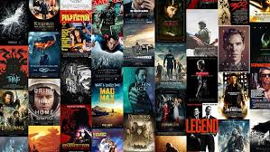
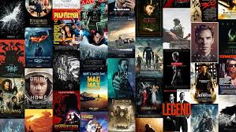
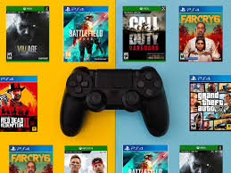
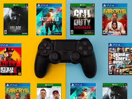

Daily life
In my daily life, I enjoy spending time with friends and family, exploring new places, and
engaging in various hobbies.
Some of my favourite activities include playing soccer, reading books, and watching movies. I also love to
travel and experience different cultures.
In my free time, I like to play video games, listen to music, and try out new recipes in
the kitchen.
I find joy in learning new skills and expanding my knowledge in areas that interest me, such as technology and
art.
Overall, I strive to maintain a balanced lifestyle that allows me to enjoy my passions
while also focusing on personal growth and development.
Hobbies
Some of my hobbies include:
- 🌟 Playing basketball with friends
- 🌟 Reading books, especially science fiction and fantasy
- 🌟 Watching movies and TV shows, particularly thrillers and comedies
- 🌟 Exploring new places and cultures through travel
- 🌟 Playing video games, especially action and adventure genres
- 🌟 Listening to music, ranging from pop to classical
- 🌟 Trying out new recipes and cooking different cuisines

Interesting Fun Facts About Me
I have always been fascinated by different cultures and experiences.
One fun fact about me is that I can speak three languages: English, Arabic, and Dinka.
Growing up in Kenya before moving to Australia in 2015 exposed me to diverse traditions, foods,
and celebrations, and I enjoy sharing these stories with friends. Another fun fact is that I am a
huge basketball fan. At 6'9”, I often surprise people when I tell them I can't dunk easily due to
a knee injury, but I still enjoy playing casually with friends. I also love experimenting in the
kitchen I once tried to recreate a traditional South Sudanese dish using only Australian
ingredients, and while it wasn't perfect, it sparked my passion for cooking fusion meals.
When I'm not playing sports or coding, I enjoy drawing and digital art. I find it relaxing
to create characters and bring them to life with cultural influences. I also enjoy exploring
random trivia; for instance, did you know giraffes only sleep about 30 minutes a day?
These quirky facts make conversations fun and remind me that there's always something new
to learn.
Skills Spotlight
Unique Skills I Have Learned
Over the years, I've developed several skills that reflect both my academic journey and
personal interests. One of my strongest skills is computer literacy. I am proficient in
programming with Java and Python, building web pages using HTML and CSS, and creating
diagrams for systems analysis such as ERDs, class diagrams, and statecharts. These skills
not only help me academically but also prepare me for real-world IT roles. Beyond academics,
I have also developed strong communication skills. Working at Dust Flowers and in customer
service taught me how to interact with people clearly and effectively, whether face-to-face
or through digital platforms. Another unique skill is teamwork I've participated in
group assignments where collaboration and task-sharing were crucial to success. Finally,
on a more casual side, I can cook a wide range of dishes and often surprise my friends
with meals from different cultures, blending flavors and experimenting with recipes.
Unique Skills I Am Pursuing
While I am proud of the skills I already have, I am constantly working to improve and
develop new ones. Currently, I am pursuing stronger skills in software development and
problem-solving. I want to become confident in building full-stack applications that can
solve real problems in industries like finance and healthcare. I am also working on
improving my public speaking and presentation skills, as I believe that technical skills
alone are not enough being able to communicate ideas clearly is equally important.
Outside of IT, I am pursuing athletic skills as well. Basketball continues to be a sport
I enjoy, and I am working on improving my endurance and strength to overcome past
limitations. I am also pursuing creative skills such as digital art and storytelling,
where I aim to create culturally inspired art that can reach wider audiences online.
Pursuing these skills keeps me motivated and ensures I am always growing both personally
and professionally.

 

 
